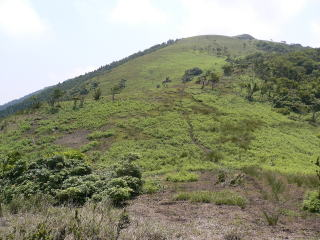

日付 '08 07/12-13
参加者 6名
行程 先発組；西明寺→綿向山→イハイガ岳→大峠→清水頭→南雨乞岳→雨乞岳→杉峠（後発組と合流，泊）
→雨乞岳→東雨乞岳→七人山のコル→クラ谷→県境尾根→御在所岳→中道→湯の花温泉
後発組；甲津畑→杉峠（先発組と合流，泊）
→雨乞岳→東雨乞岳→七人山のコル→クラ谷→武平峠→御在所岳→中道→湯の花温泉
コンセプト たまには違うところに行ってみよう
撮影機器 DMC-FX7
このページは先発組の記録です。
後発組の記録はこちらをご覧ください。
前夜はスイカで腹ごしらえ。
近江八幡から北畑口行きバスに乗車。日野駅で休憩中。
 9時50分，西明寺から綿向山に登り始めます。 9時50分，西明寺から綿向山に登り始めます。
７合目付近から。もやがかかって琵琶湖は見えません。
山頂（1110m）。鹿の死骸がとてつもない死臭を発していて，ランチどころではなかった。裸で写真撮影しているおじさんがいました。
13時，山頂を出発。雨乞岳はまだ先です。

一面の野原に，鹿が元気に走り回っていました。
イハイガ岳近くのガレ場。落ちたらかなり痛そうです。この辺でコンパスを見つけた方はKITWVまでお願いします…
16時半，清水頭（1095m）で休憩。通り抜ける風がズボンを脱がしてくれます。
17時半，南雨乞岳に到着。伊勢湾と御在所岳，鎌ガ岳のスリーショットが拝めました。
18時，飛行機が月を突き抜けたところで，雨乞岳（1238m）に到着。ササがすごい。雨乞の池にハマる。
20分後，杉峠に降下。後発組と合流。20時20分，紅茶でまったりタイム。
後発組は4時起床で先に出発。雨乞岳でのご来光を愉しむ。先発組は5時半起床。朝日を浴びながらの朝げ。
再び雨乞岳を経て，7時，東雨乞岳。やはりササがすごい。
20分後，七人山のコル付近。ササを抜けて広葉樹林帯に入る。
 クラ谷。暗い。 クラ谷。暗い。
9時，武平峠のショートカット目当てに県境尾根をチョイス。狭い。
御在所岳(1209m)山頂を通過し，10時15分，スキー場。すべれない。
11時，レストラン前のオープンテラスでソフトクリームを食べて観光客気分を味わう。
ロープウェイ。時々山頂で使う車もつるされているらしい。
中道を下る。登りたくはない道です。
15時40分，湯の山温泉に到着。温泉に入って疲れをいやす。
16時，近鉄湯の山温泉駅。京都まで約5時間の鈍行列車の旅。
一方，翌日テストの撮影係は名古屋から大人げない速度で帰り，京都駅で3時間早く出た後発組に追いつきました。
 活動記録に戻る 活動記録に戻る
|
|